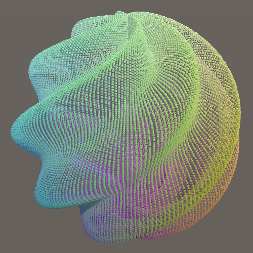
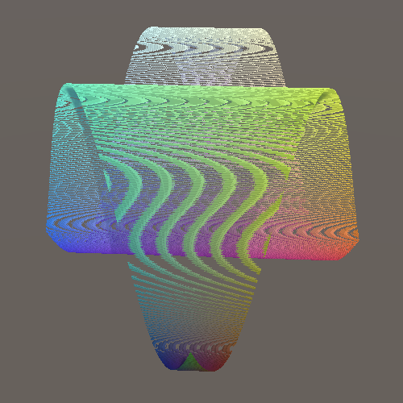

Compute Shaders
Rendering One Million Cubes
- Store positions in a compute buffer.
- Let the GPU do most of the work.
- Procedurally draw many cubes.
- Copy the entire function library to the GPU.
This is the fifth tutorial in a series about learning the basics of working with Unity. This time we'll use a compute shader to significantly increase the resolution of our graph.
This tutorial is made with Unity 2020.3.6f1.
Moving Work to the GPU
The higher the resolution of our graph the more work the CPU and GPU have to do, calculating positions and rendering cubes. The amount of points is equal to the resolution squared, so doubling the resolution significantly increases the workload. We might be able to reach 60FPS at resolution 100, but how far can we push this? And if we hit a bottleneck can we push past it by using a different approach?
Resolution 200
Let's begin by doubling the maximum resolution of Graph from 100 to 200 and see what performance we get.
[SerializeField, Range(10, 200)] int resolution = 10;

We're now rendering 40,000 points. In my case the average frame rate dropped to 10FPS for a BRP build and to 15FPS for a URP build. This is too low for a smooth experience.
Profiling a build reveals that everything takes about four times as long, which makes sense.
GPU Graph
Sorting, batching, and then sending transformation matrices for 40,000 points to the GPU takes a lot of time. A single matrix consists of sixteen float numbers, which are four bytes each, for a total of 64B per matrix. For 40,000 points that's 2.56 million bytes—roughly 2.44MiB—that has to be copied to the GPU every time the points are drawn. URP has to do this twice per frame, once for shadows and once for the regular geometry. BRP has to do it at least three times, because of its extra depth-only pass, plus once more for every light besides the main directional one.
In general it is best to minimize the amount of communication and data transfer between CPU and GPU. As we only need the positions of the points to display them it would be ideal if that data only exists on the GPU side. That would eliminate a lot of data transfer. But then the CPU can no longer calcuate the positions, the GPU has to do it instead. Fortunately it is quite suited for the task.
Having the GPU calculate the positions requires a different approach. We'll leave our current graph as it is for comparison and create a new one. Copy the Graph C# asset file and rename it to GPUGraph. Remove the pointPrefab and points fields from the new class. Then also remove its Awake, UpdateFunction, and UpdateFunctionTransition methods. I've only marked the deleted code for the new class, rather than mark everything as new code.
using UnityEngine;
public class GPUGraph : MonoBehaviour {
//[SerializeField]
//Transform pointPrefab;
[SerializeField, Range(10, 200)]
int resolution = 10;
[SerializeField]
FunctionLibrary.FunctionName function;
public enum TransitionMode { Cycle, Random€ }
[SerializeField]
TransitionMode transitionMode = TransitionMode.Cycle;
[SerializeField, Min(0f)]
float functionDuration = 1f, transitionDuration = 1f;
//Transform[] points;
float duration;
bool transitioning;
FunctionLibrary.FunctionName transitionFunction;
//void Awake () { … }
void Update () { … }
void PickNextFunction () { … }
//void UpdateFunction () { … }
//void UpdateFunctionTransition () { … }
}
Then remove the code that invokes the now missing methods at the end of Update.
void Update () {
…
//if (transitioning) {
// UpdateFunctionTransition();
//}
//else {
// UpdateFunction();
//}
}
Our new GPUGraph component is a gutted version of Graph that exposes the same configuration options, minus the prefab. It contains the logic for transitioning from function to function, but doesn't do anything beyond that. Create a game object with this component, with resolution 200, set to cycle with instantaneous transitions. Deactivate the original graph object so only the GPU version remains active.
Compute Buffer
To store the positions on the GPU we need to allocate space for them. We do this by creating a ComputeBuffer object. Add a field for a positions buffer to GPUGraph and create the object in a new Awake method, by invoking new ComputeBuffer(), which is known as a constructor method. It works like allocating a new array, but for an object or struct.
ComputeBuffer positionsBuffer;
void Awake () {
positionsBuffer = new ComputeBuffer();
}
We need to pass the amount of elements of the buffer as an argument, which is the resolution squared, just like for the positions array of Graph.
positionsBuffer = new ComputeBuffer(resolution * resolution);
A compute buffer contains arbitrary untyped data. We have to specify the exact size of each element in bytes, via a second argument. We need to store 3D position vectors, which consist of three float numbers, so the element size is three times four bytes. Thus 40,000 positions would require 0.48MB or roughly 0.46MiB of GPU memory.
positionsBuffer = new ComputeBuffer(resolution * resolution, 3 * 4);
This gets us a compute buffer, but these objects do not survive hot reloads, which means that if we change code while in play mode it will disappear. We can deal with this by replacing the Awake method with an OnEnable method, which gets invoked each time the component is enabled. This happens right after it awakens—unless it's disabled—and also after a hot reload is completed.
void OnEnable () {
positionsBuffer = new ComputeBuffer(resolution * resolution, 3 * 4);
}
Besides that we should also add a companion OnDisable method, which gets invoked when the component is disabled, which also happens if the graph is destroyed and right before a hot reload. Have it release the buffer, by invoking its Release method. This indicates that the GPU memory claimed by the buffer can be freed immediately.
void OnDisable () {
positionsBuffer.Release();
}
As we won't use this specific object instance after this point it's a good idea to explicitly set the field to reference null. This makes it possible for the object to be reclaimed by Unity's memory garbage collection process the next time it runs, if our graph gets disabled or destroyed while in play mode.
void OnDisable () {
positionsBuffer.Release();
positionsBuffer = null;
}
Compute Shader
To calculate the positions on the GPU we have to write a script for it, specifically a compute shader. Create one via Assets / Create / Shader / Compute Shader. It'll become the GPU equivalent of our FunctionLibrary class, so name it FunctionLibrary as well. Although it's known as a shader and uses HLSL syntax it functions as a generic program, not a as regular shader used for rendering things. Thus I placed the asset in the Scripts folder.
Open the asset file and remove its default contents. A compute shader needs to contain a main function known as a kernel, indicated via the #pragma kernel directive followed by a name, like #pragma surface of our surface shader. Add this directive as the first and currently only line, using the name FunctionKernel.
#pragma kernel FunctionKernel
Define the function below the directive. It's a void function, initially without parameters.
#pragma kernel FunctionKernel
void FunctionKernel () {}
Compute Threads
When a GPU is instructed to execute a compute shader function it partitions its work into groups and then schedules them to run independently and in parallel. Each group in turn consists of a number of threads that perform the same calculations but with different input. We have to specify how many threads each group should have, by adding the numthreads attribute to our kernel function. It requires three integer arguments. The simplest options is to use 1 for all three arguments, which makes each group run only a single thread.
[numthreads(1, 1, 1)]
void FunctionKernel () {}
GPU hardware contains compute units that always run a specific fixed amount of threads in lockstep. These are known as warps or wavefronts. If the amount of threads of a group is less than the warp size some threads will run idle, wasting time. If the amount of threads instead exceeds the size then the GPU will use more warps per group. In general 64 threads is a good default, as that matches the warp size of AMD GPUs while it's 32 for NVidia GPUs, so the latter will use two warps per group. In reality the hardware is more complex and can do more with thread groups, but this isn't relevant for our simple graph.
The three arguments of numthreads can be used to organize the threads in one, two, or three dimensions. For example, (64, 1, 1) gives us 64 threads in a single dimension while (8, 8, 1) gives us the same amount but presented as a 2D 8×8 square grid. As we define our points based on 2D UV coordinates let's use the latter option.
[numthreads(8, 8, 1)]
Each thread is identified by a vector of three unsigned integers, which we can access by adding a uint3 parameter to our function.
void FunctionKernel (uint3 id) {}
We have to explicitly indicate that this parameter is for the thread identifier. We do this by writing a colon after the parameter name followed by the SV_DispatchThreadID shader semantic keyword.
void FunctionKernel (uint3 id: SV_DispatchThreadID) {}
UV Coordinates
We can convert the thread identifier to UV coordinates, if we know the step size of the graph. Add a computer shader property named _Step for it, like we added _Smoothness to our surface shader.
float _Step;
[numthreads(8, 8, 1)]
void FunctionKernel (uint3 id: SV_DispatchThreadID) {}
Then create a GetUV function that takes the thread identifier as a parameter and returns the UV coordinates as a float2. We can use the same logic that we applied in Graph when looping through the points. Take the XY components of the identifier, add 0.5, multiply that by the step size, then subtract one.
float _Step;
float2 GetUV (uint3 id) {
return (id.xy + 0.5) * _Step - 1.0;
}
Setting Positions
To store a position we need access to the positions buffer. In HLSL a compute buffer is known as a structured buffer. Because we have to write to it we need the read-write enabled version, which is RWStructuredBuffer. Add a shader property for that named _Positions.
RWStructuredBuffer _Positions; float _Step;
In this case we have to specify the element type of the buffer. The positions are float3 values, which we write directly after RWStructuredBuffer between angle brackets.
RWStructuredBuffer<float3> _Positions;
To store the position of a point we need to assign an index to it, based on the thread identifier. We need to know the graph's resolution for this. So add a _Resolution shader property, with the uint type to match the identifier's type.
RWStructuredBuffer<float3> _Positions; uint _Resolution; float _Step;
Then create a SetPosition function that sets a position, given an identifier and the position to set. For the index we'll use the identifier's X component plus it's Y component multiplied by the graph resolution. This way we store 2D data sequentially in a 1D array.
float2 GetUV (uint3 id) {
return (id.xy + 0.5) * _Step - 1.0;
}
void SetPosition (uint3 id, float3 position) {
_Positions[id.x + id.y * _Resolution] = position;
}
One thing that we have to be aware of is that our groups each calculate a grid of 8×8 points. If the graph's resolution isn't a multiple of 8 then we'll end up with one row and one column of groups that will calculate some points that are out of bounds. The indices for those points will either fall outside the buffer or clash with valid indices, which would corrupt our data.
Invalid positions can be avoided by storing them only if both the X and Y identifier components are less than the resolution.
void SetPosition (uint3 id, float3 position) {
if (id.x < _Resolution && id.y < _Resolution) {
_Positions[id.x + id.y * _Resolution] = position;
}
}
Wave Function
We can now get the UV coordinates in FunctionKernel and set a position using the functions that we created. Begin by using zero for the position.
[numthreads(8, 8, 1)]
void FunctionKernel (uint3 id: SV_DispatchThreadID) {
float2 uv = GetUV(id);
SetPosition(id, 0.0);
}
We'll initially only support the Wave function, which is the simplest of our library. To make it animate we need to know the time, so add a _Time property.
float _Step, _Time;
Then copy the Wave method from the FunctionLibrary class, inserting it above FunctionKernel. To turn it into an HLSL function remove the public static qualifiers, replace Vector3 with float3, and Sin with sin.
float3 Wave (float u, float v, float t) {
float3 p;
p.x = u;
p.y = sin(PI * (u + v + t));
p.z = v;
return p;
}
The only thing still missing is the definition of PI. We'll add it by defining a macro for it. That's done by writing #define PI followed by the number, for which we'll use 3.14159265358979323846. That's far more precise than a float value can represent, but we leave it to the shader compiler to use an appropriate approximation.
#define PI 3.14159265358979323846
float3 Wave (float u, float v, float t) { … }
Now use the Wave function to calculate the position in FunctionKernel instead of using zero.
void FunctionKernel (uint3 id: SV_DispatchThreadID) {
float2 uv = GetUV(id);
SetPosition(id, Wave(uv.x, uv.y, _Time));
}
Dispatching a Compute Shader Kernel
We have a kernel function that calculates and stores positions for our graph's points. The next step is to run it on the GPU. GPUGraph needs access to the compute shader to do this, so add a serializable ComputeShader field to it and then hook our asset up to the component.
[SerializeField] ComputeShader computeShader;
We need to set a few properties of the compute shader. To do this we need to know the identifiers that Unity uses for them. These are integers that can be retrieved by invoking Shader.PropertyToID with a name string. These identifiers are claimed on demand and remain the same while the app or editor is running, so we can directly store the identifiers in static fields. Begin with the _Positions property.
static int positionsId = Shader.PropertyToID("_Positions");
We're never going to change these fields, which we can indicate by adding the readonly qualifier to them. Besides making the intent of the field clear, this instructs the compiler to produce an error if we do assign something to it somewhere else.
static readonly int positionsId = Shader.PropertyToID("_Positions");
Store the identifiers for _Resolution, _Step, and _Time as well.
static readonly int
positionsId = Shader.PropertyToID("_Positions"),
resolutionId = Shader.PropertyToID("_Resolution"),
stepId = Shader.PropertyToID("_Step"),
timeId = Shader.PropertyToID("_Time");
Next, create an UpdateFunctionOnGPU method that calculates the step size and sets the resolution, step, and time properties of the compute shader. This is done by invoking SetInt on it for the resolution and SetFloat for the other two properties, with the identifier and value as arguments.
void UpdateFunctionOnGPU () {
float step = 2f / resolution;
computeShader.SetInt(resolutionId, resolution);
computeShader.SetFloat(stepId, step);
computeShader.SetFloat(timeId, Time.time);
}
We also have to set the positions buffer, which doesn't copy any data but links the buffer to the kernel. This is done by invoking SetBuffer, which works like the other methods except that it requires an extra argument. Its first argument is the index of the kernel function, because a compute shader can contain multiple kernels and buffers can be linked to specific ones. We could get the kernel index by invoking FindKernel on the compute shader, but our single kernel always has index zero so we can use that value directly.
computeShader.SetFloat(timeId, Time.time); computeShader.SetBuffer(0, positionsId, positionsBuffer);
After setting the buffer we can run our kernel, by invoking Dispatch on the compute shader with four integer parameters. The first is the kernel index and the other three are the amount of groups to run, again split per dimension. Using 1 for all dimensions would mean only the first group of 8×8 positions gets calculated.
computeShader.SetBuffer(0, positionsId, positionsBuffer); computeShader.Dispatch(0, 1, 1, 1);
Because of our fixed 8×8 group size the amount of groups we need in the X and Y dimensions is equal to the resolution divided by eight, rounded up. We can do this by performing a float division and passing the result to Mathf.CeilToInt.
int groups = Mathf.CeilToInt(resolution / 8f); computeShader.Dispatch(0, groups, groups, 1);
To finally run our kernel invoke UpdateFunctionOnGPU at the end of Update.
void Update () {
…
UpdateFunctionOnGPU();
}
Now we're calculating all the graph's positions every frame while in play mode, even though we don't notice this and don't do anything with the data yet.
Procedural Drawing
With the positions available on the GPU the next step is to draw the points, without sending any transformation matrices from the CPU to the GPU. Thus the shader will have to retrieve the correct position from the buffer instead of relying on the standard matrices.
Drawing Many Meshes
Because the positions already exist on the GPU we don't need to keep track of them on the CPU side. We don't even need game objects for them. Instead we'll instruct the GPU to draw a specific mesh with a specific material many times, via a single command. To configure what to draw add serializable Material and Mesh fields to GPUGraph. We'll initially use our existing Point Surface material that we already have for drawing points with BRP. For the mesh we'll use the default cube.
[SerializeField] Material material; [SerializeField] Mesh mesh;
Procedural drawing is done by invoking Graphics.DrawMeshInstancedProcedural with a mesh, sub-mesh index, and material as arguments. The sub-mesh index is for when a mesh consists of multiple parts, which is not the case for us so we use index zero. Do this at the end of UpdateFunctionOnGPU.
void UpdateFunctionOnGPU () {
…
Graphics.DrawMeshInstancedProcedural(mesh, 0, material);
}
Because this way of drawing doesn't use game objects Unity doesn't know where in the scene the drawing happens. We have to indicate this by providing a bounding box as an additional argument. This is an axis-aligned box that indicates the spatial bounds of whatever we're drawing. Unity uses this to determine whether the drawing can be skipped, because it ends up outside the field of view of the camera. This is known as frustum culling. So instead of evaluating the bounds per point it now happens for the entire graph at once. This is fine for our graph, as the idea is that we view it in its entirety.
Our graph sits at the origin and the points should remain inside a cube with size 2. We can create a bounds value for that by invoking the Bounds constructor method with Vector3.zero and Vector3.one scaled by two as arguments.
var bounds = new Bounds(Vector3.zero, Vector3.one * 2f); Graphics.DrawMeshInstancedProcedural(mesh, 0, material, bounds);
But points have a size as well, half of which could poke outside the bounds in all directions. So we should increase the bounds likewise.
var bounds = new Bounds(Vector3.zero, Vector3.one * (2f + 2f / resolution));
The final argument that we must provide to DrawMeshInstancedProcedural is how many instances should be drawn. This should match the amount of elements in the positions buffer, which we can retrieve via its count property.
Graphics.DrawMeshInstancedProcedural( mesh, 0, material, bounds, positionsBuffer.count );
When entering play mode we'll now see a single colored unit cube sitting at the origin. It's the same cube getting rendered once per point, but with an identity transformation matrix so they all overlap. Performance is a lot better than before, because almost no data needs to be copied to the GPU and all points are drawn with a single draw call. Also, Unity doesn't have to do any culling per point. It also doesn't sort the points based on their view-space depth, which it normally does so that points nearest to the camera are drawn first. Depth sorting makes rendering of opaque geometry more efficient because it avoids overdraw, but our procedural draw command simply renders the points one after the other. However, the eliminated CPU work and data transfer plus the ability of the GPU to render all cubes at full speed more than make up for this.
Retrieving the Positions
To retrieve the point positions that we stored on the GPU we'll have to create a new shader, initially for BRP. Duplicate the Point Surface shader and rename it to Point Surface GPU. Adjust its shader menu label to match. Also, as we now rely on a structured buffer filled by a compute shader increase the shader's target level to 4.5. This isn't strictly needed but indicates that we need compute shader support.
Shader "Graph/Point Surface GPU" {
Properties {
_Smoothness ("Smoothness", Range(0,1)) = 0.5
}
SubShader {
CGPROGRAM
#pragma surface ConfigureSurface Standard fullforwardshadows
#pragma target 4.5
…
ENDCG
}
FallBack "Diffuse"
}
Procedural rendering works like GPU instancing, but we need to specify an additional option, indicated by adding the #pragma instancing_options directive. In this case we have to follow it with the procedural:ConfigureProcedural option.
#pragma surface ConfigureSurface Standard fullforwardshadows #pragma instancing_options procedural:ConfigureProcedural
This indicates that the surface shader needs to invoke a ConfigureProcedural function per vertex. It's a void function without any parameters. Add it to our shader.
void ConfigureProcedural () {}
void ConfigureSurface (Input input, inout SurfaceOutputStandard surface) {
surface.Albedo = saturate(input.worldPos * 0.5 + 0.5);
surface.Smoothness = _Smoothness;
}
By default this function will only get invoked for the regular draw pass. To also apply it when rendering shadows we have to indicate that we need a custom shadow pass, by adding addshadow to the #pragma surface directive.
#pragma surface ConfigureSurface Standard fullforwardshadows addshadow
Now add the same positions buffer field that we declared in our compute shader. This time we'll only read from it so give it the StructuredBuffer type instead of RWStructuredBuffer.
StructuredBuffer<float3> _Positions;
void ConfigureProcedural () {}
But we should do this only for shader variants specifically compiled for procedural drawing. This is the case when the UNITY_PROCEDURAL_INSTANCING_ENABLED macro label is defined. We can check this by writing #if defined(UNITY_PROCEDURAL_INSTANCING_ENABLED). This is a preprocessor directive that instructs the compiler to only include the code on the following lines if the label is defined. This applies until a line that only contains the #endif directive. It works like a conditional block in C#, except that the code is included or omitted during compilation. No branch exists in the final code.
#if defined(UNITY_PROCEDURAL_INSTANCING_ENABLED) StructuredBuffer<float3> _Positions; #endif
We have to do the same for the code that we'll put inside the ConfigureProcedural function.
void ConfigureProcedural () {
#if defined(UNITY_PROCEDURAL_INSTANCING_ENABLED)
#endif
}
Now we can retrieve the position of the point by indexing the positions buffer with the identifier of the instance that's currently being drawn. We can access its identifier via unity_InstanceID, which is globally accessible.
void ConfigureProcedural () {
#if defined(UNITY_PROCEDURAL_INSTANCING_ENABLED)
float3 position = _Positions[unity_InstanceID];
#endif
}
Creating a Transformation Matrix
Once we have a position the next step is to create an object-to-world transformation matrix for the point. To keep things as simple as possible we fix our graph at the world origin, without any rotation nor scaling. Adjusting the Transform component of the GPU Graph game object will have no effect, as we don't use it for anything.
We only have to apply the point's position and scale. The position is stored in the last column of the 4×4 transformation matrix, while the scale is stored in the matrix diagonal. The last component of the matrix is always set to 1. All other components are zero for us.
The transformation matrix is used to convert vertices from object space to world space. It's provided globally via unity_ObjectToWorld. Because we're drawing procedurally it's an identity matrix, so we have to replace it. Intially set the entire matrix to zero.
float3 position = _Positions[unity_InstanceID]; unity_ObjectToWorld = 0.0;
We can construct a column vector for the position offset via float4(position, 1.0). We can set it as the fourth column by assigning it to unity_ObjectToWorld._m03_m13_m23_m33.
unity_ObjectToWorld = 0.0; unity_ObjectToWorld._m03_m13_m23_m33 = float4(position, 1.0);
Then add a float _Step shader property to our shader and assign it to unity_ObjectToWorld._m00_m11_m22. This correctly scales our points.
float _Step;
void ConfigureProcedural () {
#if defined(UNITY_PROCEDURAL_INSTANCING_ENABLED)
float3 position = _Positions[unity_InstanceID];
unity_ObjectToWorld = 0.0;
unity_ObjectToWorld._m03_m13_m23_m33 = float4(position, 1.0);
unity_ObjectToWorld._m00_m11_m22 = _Step;
#endif
}
There is also a unity_WorldToObject matrix, which contains the inverse transformation, used for transforming normal vectors. It is needed to correctly transform direction vectors when a nonuniform deformation is applied. But as this doesn't apply to our graph we can ignore it. We should tell this to our shaders though, by adding assumeuniformscaling to the instancing options pragma.
#pragma instancing_options assumeuniformscaling procedural:ConfigureProcedural
Now create a new material that uses this shader, with GPU instancing enabled, and assign it to our GPU graph.
To make this work correctly we have to set the material's properties just like we set the compute shader's earlier. Invoke SetBuffer and SetFloat on the material in UpdateFunctionOnGPU before drawing. In this case we don't have to provide a kernel index for the buffer.
material.SetBuffer(positionsId, positionsBuffer); material.SetFloat(stepId, step); var bounds = new Bounds(Vector3.zero, Vector3.one * (2f + 2f / resolution)); Graphics.DrawMeshInstancedProcedural( mesh, 0, material, bounds, positionsBuffer.count );
We once again see our graph when we enter play mode, but now its 40,000 points are rendered at a solid 60FPS. If I turn VSync off for the editor game window it shoots up to 245FPS. Our procedural approach is clearly much faster that using one game object per point.
Profiling a build reveals that our GPUGraph component has almost nothing to do. It only instructs the GPU to run a compute shader kernel and then tells Unity to procedurally draw a lot of points. This doesn't happen immediately. The compute shader is scheduled and will run as soon as the GPU is free. The procedural draw command is later send to the GPU by the BRP. The command is send three times, once for the depth-only pass, once for shadows, and once for the final draw. The GPU will first run the compute shader and only when that is finished will it be available to draw the scene, after which it can run the next invocation of the compute shader. Unity has no trouble doing this for 40,000 points.
Going for a Million
As it can handle 40,000 points so well, let's see if our GPU graph can handle a million points. But before we do that we have to be aware of asynchronous shader compilation. This is a feature of the Unity editor, not builds. The editor only compiles shaders when needed, instead of ahead of time. This can save a lot of compilation time when editing shaders, but means that a shader isn't always immediately available. When this happens a uniform cyan dummy shader is temporarily used instead until the shader compilation process has finishes, which runs in parallel. This is usually fine, but the dummy shader doesn't work with procedural drawing. It will significantly slow down the drawing process. If this happens when trying to render a million points it will most likely freeze and then crash Unity, and possibly your entire machine along with it.
We could turn off asynchronous shader compilation via the project settings, but it's only a problem for our Point Surface GPU shader. Fortunately we can tell Unity to use synchronous compilation for a specific shader by adding the #pragma editor_sync_compilation directive to it. This will force Unity to stall and immediately compile the shader right before it gets used the first time, avoiding the dummy shader.
#pragma surface ConfigureSurface Standard fullforwardshadows addshadow #pragma instancing_options assumeuniformscaling procedural:ConfigureProcedural #pragma editor_sync_compilation #pragma target 4.5
Now it's safe to increase the resolution limit of GPUGraph to 1000.
[SerializeField, Range(10, 1000)] int resolution = 10;
Let's give the maximum resolution a try.

It doesn't look pretty when viewed in a small window—moiré patterns show up because the points are so small—but it runs. For me a million animating points are rendered at 24FPS. Performance is the same in the editor and a build. The editor overhead is insignificant at this point, the GPU is the bottleneck. Also, whether VSync is enabled or not doesn't make a noticeable difference in my case.
When VSync is disabled it's clear that most time of the player loop is spent waiting for the GPU to finish. The GPU is indeed the bottleneck. We could add quite some workload to the CPU without affecting performance.
Note that we're rendering a million points with shadows, which requires them to be drawn three times per frame for BRP. Disabling shadows increases my average frame rate to around 65FPS with no VSync.
Of course you don't need to increase the resolution all the way to 1,000 if you find the frame rate insufficient. Reducing it to 700 might already make it run at 60FPS with shadows enabled and will look mostly the same. But I'll use resolution 1,000 consistently from now on.
URP
To see how URP performs we need to also duplicate our Point URP shader graph, renaming it to Point URP GPU. Shader graph doesn't directly support procedural drawing, but we can make it work with a little custom code. To make this easy and also reuse some code we'll create an HLSL include file asset. Unity doesn't have a menu option for this, so just duplicate one of the surface shader assets and rename it to PointGPU. Then use your system's file browser to change the asset's file extension from shader to hlsl.
Clear the file's contents, then copy the code for the positions buffer, the scale, and the ConfigureProcedural function from Points Surface GPU to it.
#if defined(UNITY_PROCEDURAL_INSTANCING_ENABLED)
StructuredBuffer<float3> _Positions;
#endif
float _Step;
void ConfigureProcedural () {
#if defined(UNITY_PROCEDURAL_INSTANCING_ENABLED)
float3 position = _Positions[unity_InstanceID];
unity_ObjectToWorld = 0.0;
unity_ObjectToWorld._m03_m13_m23_m33 = float4(position, 1.0);
unity_ObjectToWorld._m00_m11_m22 = _Step;
#endif
}
We can now include this file in the Point Surface GPU shader via the #include "PointGPU.hlsl" directive, after which the original code can be removed from it.
#include "PointGPU.hlsl"
struct Input {
float3 worldPos;
};
float _Smoothness;
//#if defined(UNITY_PROCEDURAL_INSTANCING_ENABLED)
// StructuredBuffer<float3> _Positions;
//#endif
//float _Step;
//void ConfigureProcedural () { … }
void ConfigureSurface (Input input, inout SurfaceOutputStandard surface) { … }
We'll use a Custom Function node to include the HLSL file in our shader graph. The idea is that the node invokes a function from the file. Although we don't need this functionality, the code won't be included unless we connect it to our graph. So we'll add a properly-formatted dummy function to PointGPU that simply passes through a float3 value without changing it.
Add a void ShaderGraphFunction_float function to PointGPU with two float3 parameters named In and Out. The function simply assigns the input to the output. The parameter names are capitalized by convention because they'll correspond to input and output labels used in the shader graph.
void ShaderGraphFunction_float (float3 In, float3 Out) {
Out = In;
}
This assumes that the Out parameter is an output parameter, which we have to declare by writing out in front of it.
void ShaderGraphFunction_float (float3 In, out float3 Out) {
Out = In;
}
The _float suffix of the function name is required because it indicates the precision of the function. Shader graph offers two precision modes, either float or half. The latter is half the size of the former, so two instead of four bytes. The precision used by nodes can by chosen explicitly or set to inherit, which is the default. To make sure that our graph will work for both precision modes also add a variant function that uses half precision instead.
void ShaderGraphFunction_float (float3 In, out float3 Out) {
Out = In;
}
void ShaderGraphFunction_half (half3 In, out half3 Out) {
Out = In;
}
Now add a Custom Function node to our Point URP GPU graph. It's Type is set to File by default. Assign PointGPU to its Source property. Use ShaderGraphFunction for its Name, without the precision suffix. Then add In to the Inputs list and Out to the Outputs list, both as a Vector3.
To integrate our code in the graph we have to connect the node to it. As it's needed for the vertex stage connect its output to the Position of the Vertex node. Then add a Position node set to object space and connect it to the input of our custom node.
Now the object space vertex position is passed through our dummy function and our code gets included in the generated shader. But to enable procedural rendering we also have to include the #pragma instancing_options and #pragma editor_sync_compilation compiler directives. These have to be injected in the generated shader source code directly, they cannot be included via a separate file. So add another Custom Function node with the same input and output as earlier, but this time with its Type set to String. Set its Name to something appropriate—like InjectPragmas—then put the directives in the Body text block. The body acts as the code block of a function, so we also have to assign the input to the ouput here.
For clarity, this is the body's code:
#pragma instancing_options assumeuniformscaling procedural:ConfigureProcedural #pragma editor_sync_compilation Out = In;
Pass the vertex position through this node as well, either before or after the other custom function node.
Create a material with instancing enabled that uses the Point URP GPU shader, assign it to our graph, then enter play mode. I now get 36FPS both in the editor and a build, with shadows enabled. That's 50% faster than BRP.
Again VSync makes no difference for the average frame rate. Disabling shadows increases it to 69FPS, which is roughly the same as for BRP, the player loop just takes a little less time.
Variable Resolution
Because we're currently always drawing a point for every position in the buffer decreasing the resolution while in play mode will fix some points in place. This happens because the compute shader only updates the points that fit in the graph.
Compute buffers cannot be resized. We could create a new one each time the resolution is changed, but an alternative and simpler approach is to always allocate a buffer for the maximum resolution. That would make changing resolution while in play mode effortless.
Begin by defining the max resolution as a constant, then use it in the Range attribute of the resolution field.
const int maxResolution = 1000; … [SerializeField, Range(10, maxResolution)] int resolution = 10;
Next, always use the square of the max resolution for the amount of elements of the buffer. This means that we'll always claim 12MB—roughly 11.44MiB—of GPU memory, no matter the graph resolution.
void OnEnable () {
positionsBuffer = new ComputeBuffer(maxResolution * maxResolution, 3 * 4);
}
Finally, when drawing use the current resolution squared instead of the buffer element count.
void UpdateFunctionOnGPU () {
…
Graphics.DrawMeshInstancedProcedural(
mesh, 0, material, bounds, resolution * resolution
);
}
GPU Function Library
Now that our GPU-based approach is fully functional let's port our entire function library to our compute shader.
All Functions
We can copy the other functions just like we copied and adjusted Wave. The second one is MultiWave. The only significant difference with Wave is that it contains float values. The f suffix doesn't exist in HLSL so should be removed from all numbers. To indicate that they're all floating-point values I explicitly added a dot for all of them, for example 2f becomes 2.0.
float3 MultiWave (float u, float v, float t) {
float3 p;
p.x = u;
p.y = sin(PI * (u + 0.5 * t));
p.y += 0.5 * sin(2.0 * PI * (v + t));
p.y += sin(PI * (u + v + 0.25 * t));
p.y *= 1.0 / 2.5;
p.z = v;
return p;
}
Do the same for the remaining functions. Sqrt becomes sqrt and Cos becomes cos.
float3 Ripple (float u, float v, float t) {
float d = sqrt(u * u + v * v);
float3 p;
p.x = u;
p.y = sin(PI * (4.0 * d - t));
p.y /= 1.0 + 10.0 * d;
p.z = v;
return p;
}
float3 Sphere (float u, float v, float t) {
float r = 0.9 + 0.1 * sin(PI * (6.0 * u + 4.0 * v + t));
float s = r * cos(0.5 * PI * v);
float3 p;
p.x = s * sin(PI * u);
p.y = r * sin(0.5 * PI * v);
p.z = s * cos(PI * u);
return p;
}
float3 Torus (float u, float v, float t) {
float r1 = 0.7 + 0.1 * sin(PI * (6.0 * u + 0.5 * t));
float r2 = 0.15 + 0.05 * sin(PI * (8.0 * u + 4.0 * v + 2.0 * t));
float s = r2 * cos(PI * v) + r1;
float3 p;
p.x = s * sin(PI * u);
p.y = r2 * sin(PI * v);
p.z = s * cos(PI * u);
return p;
}
Macros
We now have to create a separate kernel function for each graph function, but that's a lot of repeated code. We can avoid that by creating a shader macro, like we defined PI earlier. Begin by writing #define KERNEL_FUNCTION on the line above the FunctionKernel function.
#define KERNEL_FUNCTION
[numthreads(8, 8, 1)]
void FunctionKernel (uint3 id: SV_DispatchThreadID) { … }
These definitions normally only apply to whatever is written behind them on the same line, but we can extend it to multiple lines by adding a \ backslash at the end of every line except the last.
#define KERNEL_FUNCTION \
[numthreads(8, 8, 1)] \
void FunctionKernel (uint3 id: SV_DispatchThreadID) { \
float2 uv = GetUV(id); \
SetPosition(id, Wave(uv.x, uv.y, _Time)); \
}
Now when we write KERNEL_FUNCTION the compiler will replace it with the code for the FunctionKernel function. To make it work for an arbitrary function we add a parameter to the macro. This works like the parameter list for a function, but without types and the opening bracket must be attached to the macro name. Give it a single function parameter and use that instead of the explicit invocation of Wave.
#define KERNEL_FUNCTION(function) \
[numthreads(8, 8, 1)] \
void FunctionKernel (uint3 id: SV_DispatchThreadID) { \
float2 uv = GetUV(id); \
SetPosition(id, function(uv.x, uv.y, _Time)); \
}
We also have to change the kernel function's name. We'll use the function parameter as a prefix, followed by Kernel. We have to keep the function label separate though, otherwise it won't be recognized as a shader parameter. To combine both words connect them with the ## macro concatenation operator.
void function##Kernel (uint3 id: SV_DispatchThreadID) { \
All five kernel functions can now be defined by writing KERNEL_FUNCTION with the appropriate arguments.
#define KERNEL_FUNCTION(function) \ … KERNEL_FUNCTION(Wave) KERNEL_FUNCTION(MultiWave) KERNEL_FUNCTION(Ripple) KERNEL_FUNCTION(Sphere) KERNEL_FUNCTION(Torus)
We also have to replace our single kernel directive with one for each function, in the order matching FunctionLibrary.FunctionName.
#pragma kernel WaveKernel #pragma kernel MultiWaveKernel #pragma kernel RippleKernel #pragma kernel SphereKernel #pragma kernel TorusKernel
The last step is to use the current function as the kernel index in GPUGraph.UpdateFunctionOnGPU instead of always using zero.
var kernelIndex = (int)function; computeShader.SetBuffer(kernelIndex, positionsId, positionsBuffer); int groups = Mathf.CeilToInt(resolution / 8f); computeShader.Dispatch(kernelIndex, groups, groups, 1);
The compute shader runs so fast that it doesn't matter which function is displayed, the frame rate is the same for all of them.
Morphing Functions
Supporting morphing from one function to another is a bit more complex, because we need a separate kernel for every unique transition. Begin by adding a property for the transition progress to the compute shader, which we'll use to blend functions.
float _Step, _Time, _TransitionProgress;
Then duplicate the kernel macro, rename it to KERNEL_MORPH_FUNCTION, and give it two parameters: functionA and functionB. Change the function's name to functionA##To##functionB##Kernel and use lerp to linearly interpolate between the positions they calculate based on the progress. We could also use smoothstep here, but we'll only calculate that once per frame on the CPU instead.
#define KERNEL_MORPH_FUNCTION(functionA, functionB) \
[numthreads(8, 8, 1)] \
void functionA##To##functionB##Kernel (uint3 id: SV_DispatchThreadID) { \
float2 uv = GetUV(id); \
float3 position = lerp( \
functionA(uv.x, uv.y, _Time), functionB(uv.x, uv.y, _Time), \
_TransitionProgress \
); \
SetPosition(id, position); \
}
Each function can transition to all the others, so that's four transitions per function. Add kernel functions for all of these.
KERNEL_FUNCTION(Wave) KERNEL_FUNCTION(MultiWave) KERNEL_FUNCTION(Ripple) KERNEL_FUNCTION(Sphere) KERNEL_FUNCTION(Torus) KERNEL_MORPH_FUNCTION(Wave, MultiWave); KERNEL_MORPH_FUNCTION(Wave, Ripple); KERNEL_MORPH_FUNCTION(Wave, Sphere); KERNEL_MORPH_FUNCTION(Wave, Torus); KERNEL_MORPH_FUNCTION(MultiWave, Wave); KERNEL_MORPH_FUNCTION(MultiWave, Ripple); KERNEL_MORPH_FUNCTION(MultiWave, Sphere); KERNEL_MORPH_FUNCTION(MultiWave, Torus); KERNEL_MORPH_FUNCTION(Ripple, Wave); KERNEL_MORPH_FUNCTION(Ripple, MultiWave); KERNEL_MORPH_FUNCTION(Ripple, Sphere); KERNEL_MORPH_FUNCTION(Ripple, Torus); KERNEL_MORPH_FUNCTION(Sphere, Wave); KERNEL_MORPH_FUNCTION(Sphere, MultiWave); KERNEL_MORPH_FUNCTION(Sphere, Ripple); KERNEL_MORPH_FUNCTION(Sphere, Torus); KERNEL_MORPH_FUNCTION(Torus, Wave); KERNEL_MORPH_FUNCTION(Torus, MultiWave); KERNEL_MORPH_FUNCTION(Torus, Ripple); KERNEL_MORPH_FUNCTION(Torus, Sphere);
We'll define the kernels so that their index is equal to functionB + functionA * 5, treating kernels that don't transition as if they transition from and to the same function. So the first kernel is Wave, followed by the four kernels transitioning from Wave to the other functions. After that come the functions starting from MultiWave, of which the second is the non-transitioning kernel, and so on.
#pragma kernel WaveKernel #pragma kernel WaveToMultiWaveKernel #pragma kernel WaveToRippleKernel #pragma kernel WaveToSphereKernel #pragma kernel WaveToTorusKernel #pragma kernel MultiWaveToWaveKernel #pragma kernel MultiWaveKernel #pragma kernel MultiWaveToRippleKernel #pragma kernel MultiWaveToSphereKernel #pragma kernel MultiWaveToTorusKernel #pragma kernel RippleToWaveKernel #pragma kernel RippleToMultiWaveKernel #pragma kernel RippleKernel #pragma kernel RippleToSphereKernel #pragma kernel RippleToTorusKernel #pragma kernel SphereToWaveKernel #pragma kernel SphereToMultiWaveKernel #pragma kernel SphereToRippleKernel #pragma kernel SphereKernel #pragma kernel SphereToTorusKernel #pragma kernel TorusToWaveKernel #pragma kernel TorusToMultiWaveKernel #pragma kernel TorusToRippleKernel #pragma kernel TorusToSphereKernel #pragma kernel TorusKernel
Back to GPUGraph, add the identifier for the transition progress shader property.
static readonly int
…
timeId = Shader.PropertyToID("_Time"),
transitionProgressId = Shader.PropertyToID("_TransitionProgress");
Set it in UpdateFunctionOnGPU if we're transitioning, otherwise don't bother. It's here that we apply the smoothstep function, so we don't have to do it for every point on the GPU. It's a small optimization, but it comes for free and avoids a lot of work.
computeShader.SetFloat(timeId, Time.time);
if (transitioning) {
computeShader.SetFloat(
transitionProgressId,
Mathf.SmoothStep(0f, 1f, duration / transitionDuration)
);
}
To select the correct kernel index add five times the transition function to it, or five times the same function if we're not transitioning.
var kernelIndex = (int)function + (int)(transitioning ? transitionFunction : function) * 5;
The added transitions still don't affect the frame rate for me. It's clearly rendering that's the bottleneck, not the calculation of the positions.
Function Count Property
To calculate the kernel index GPUGraph needs to know how many functions there are. We can add a GetFunctionCount method to the FunctionLibrary that returns it, instead of hard-coding it in GPUGraph. The benefit of this is that we only have to change the two FunctionLibrary files—the class and the compute shader—if we were to add or remove a function.
public static int GetFunctionCount () {
return 5;
}
We can even remove the constant value and return the length of the functions array, further reducing the code we'd have to change later.
public static int GetFunctionCount () {
return functions.Length;
}
The function count is a good candidate to turn into a property. To create one ourselves remove the Get prefix from GetFunctionCount and also remove its empty parameter list. Then wrap the return statement in a nested get code block.
public static int FunctionCount {
get {
return functions.Length;
}
}
This defines a getter property. As the only thing it does is return a value we can simplify it by reducing the get block to an expression body, which is done by replacing it with get => functions.Length;.
public static int FunctionCount {
get => functions.Length;
}
Because there is no set block we can further simplify the property by omitting get. This reduces the property to a single line.
public static int FunctionCount => functions.Length;
This also works for applicable methods, in this case GetFunction and GetNextFunctionName.
public static Function GetFunction (FunctionName name) => functions[(int)name]; public static FunctionName GetNextFunctionName (FunctionName name) => (int)name < functions.Length - 1 ? name + 1 : 0;
Use the new property instead of a constant value in GPUGraph.UpdateFunctionOnGPU.
var kernelIndex = (int)function + (int)(transitioning ? transitionFunction : function) * FunctionLibrary.FunctionCount;
More Details
To wrap up, because of the increased resolution our functions can become more detailed. For example, we could double the frequency of the twists of Sphere.
float3 Sphere (float u, float v, float t) {
float r = 0.9 + 0.1 * sin(PI * (12.0 * u + 8.0 * v + t));
…
}
And likewise for the star pattern and the twisting of Torus. This will make the twists appear to move slower relative to the main pattern, so also scale up their time factor a bit.
float3 Torus (float u, float v, float t) {
float r1 = 0.7 + 0.1 * sin(PI * (8.0 * u + 0.5 * t));
float r2 = 0.15 + 0.05 * sin(PI * (16.0 * u + 8.0 * v + 3.0 * t));
…
}
To keep both function libraries synchronized adjust the functions in the FunctionLibrary class as well. This allows a more honest comparison between the game object CPU-based and the procedural GPU-based approaches.
The next tutorial is Jobs.